Chapter 4 Settings
👉 Configure the Vibe Settings to manage the system default behaviors and the protocols inputs and outputs.
This chapter provides a description of Vibe’s software settings that can be customized.
Chapter index:
4.1 System Settings
System Settings popup is accessed by selecting {System Settings} from the Vibe Menu, by tapping the [System Settings] single button key, or by tapping the {System Status} area in the system status view.
4.1.1 Editing
Editing Properties
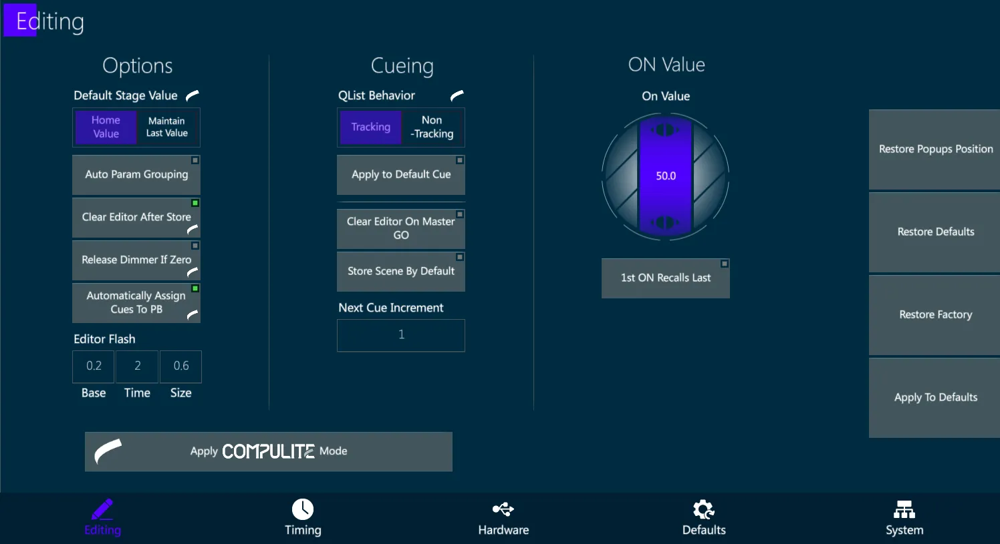
Default Stage Value:
Home Value: when released fixtures parameters return to their home values as specified in the device’s definition or user Home Scene.
Maintain Last Value: when released fixture parameters remain at their current value, except for the dimmer.
Auto Param Grouping:
When enabled, parameters are grouped as follows:
Intensity1 - (ShutterDuration) + Shutter
Intensity2 (MediaServer) - File + Folder
Position1 - Pan + Tilt
Position2 - VX + VY + VZ
Position3 - VPan + VTilt
Color1 - Cyan + Magenta + Yellow + Red + Green + Blue + White + (Virtual Dimmer) + Color Temperature + Color Correction + Color Wheel + Color Wheel Spin + Color Wheel Function + Color Wheel Speed + Auxiliary Color 1-5
Color2 - Hue + Saturation + Intensity
Color3 - VHue + VSaturation + VIntensity + [ Color Temperature + Color Correction + Color Wheel + Color Wheel Spin + Color Wheel Function + Color Wheel Speed ]
Beam1 - Prism + Prism Spin + Prism Index + Prism Speed
Beam2 - Iris + Zoom + Focus
Beam3 (MediaServer) - Zoom + Zoom Select + Zoom X + Zoom Y
Shape1 - Blade Depth + Blade Angle + BladeA Depth + BladeB Depth + Blade Package Angle
Notes:
1: When a parameter is in “( )” it means that other parameters don’t activate it, but it activates the other parameters. For example, activating Virtual Dimmer will also activate the other color parameters in the group, but activating any of the color parameters in the group will not activate Virtual Dimmer.
2: When parameters are in “[]” it means that the other parameters in the group activate them, but they don’t activate the group.
3: Color3 is Vhsi, Vhsi activates other color parameters but the other color parameters activate Color1 instead.
4: “(MediaServer)” at the group name means the parameters are used only for media servers.
5: Zoom is used for both Beam2 and Beam3, it means that clicking Zoom will activate both groups.
6: When there are parameters of the same type they will not group with each other and will only group with parameter of the same type index. For example if having 3 sets of Iris + Zoom + Focus, if the 2nd Focus is activated it will only mark the 2nd Iris and the 2nd Zoom.
Clear Editor After Store:
- After storing a cue, values remain in the editor until [RESET] or [VIBE] + [RESET] is pressed.
Release Dimmer If Zero:
- Storing Dimmer parameters with their value at 0% will Release the value instead.
Automatically Assign Cues to PB:
- After storing a cue, it is automatically assigned to the Master Controller.
Editor Flash:
Sets default values for toolbar {FLASH} feature.
{Base} = Start point (low value) {Time} = Flash duration {Size} = Amplitude (high values)
Defaults are {Base} 0.2 (20%) {Time} 2 seconds {Size} 0.6 (80%)
Qlist Behaviour:
Tracking / Non-Tracking:
Tracking:
- Values track forward. The stage look is made up of a combination of hard and tracked values.
Non-Tracking:
- Only hard values are recorded and zero dimmer values is treated as a hard zero.
In Non-Tracking mode, parameter values that are not given values will still output to the stage where they were last left. This can accidentally lead to mistakes where when played back, the cue does not look the same as it did when it was recorded. It is suggested that the Store Options {All Parameters if Active} or {All Parameters if Selected} are used whenever possible to avoid errors.
Clear Editor on Master GO:
- The editor will be reset when GO on the Master Controller is pressed.
Store Scene by Default:
By default [STORE] [HERE] (press any controller button) will create and assign the first available Scene to the controller instead of a Qlist and Cue.
Qlists may then be stored by using the syntax [STORE] [CUE] [HERE] (press any controller button).
Next Cue Increment:
- When [Store] [Here], [STORE] [STORE], or [STORE] [ENTER] are used to append a new cue to the end of a Qlist, the specified spacing will be used.
If the increment is 1 and the last cue is 10, the new cue would be 11. If the increment is 10, then the new cue would be 20.
Apply Compulite Mode:
Sets a number of default settings to emulate the traditional non-tracking Compulite Mode.
Default Stage Values = {Maintain Last Value}
{Clear Editor After Store} = Off
{Release Dimmer If Zero} = On
{Automatically Assign Cues to PB} = Off
Qlist Behavior = {Non-Tracking}
The Editor Settings affected by the Apply Compulite Mode key in the system settings popup are marked with the Compulite sign, white if Off and green if On.
ON Value:
Virtual wheel sets the default editor value for the dimmer parameter when the [ON] key is pressed.
{1st ON Recalls Last} - Pressing [ON] the first time will copy the last dimmer value set for a fixture into the next selected fixture. Pressing again will set the dimmer value to the ON default.
Restore Defaults:
{Restore Popup Positions} - Restores the position of the popups that have been moved.
{Restore Defaults} - Restores settings changes to the last time {Apply to Defaults} was set.
{Restore Factory} - Restores settings changes to factory defaults.
{Apply to Defaults} -Updates system setting changes to show specific defaults.
4.1.2 Timing
Timing Properties
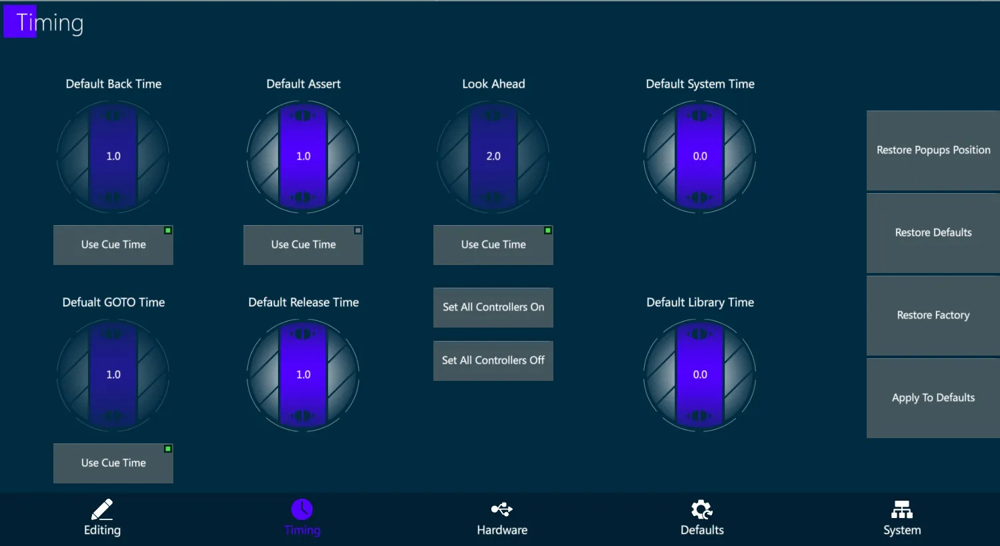
Default Back Time:
Default Time used when the [Back] or [Hold Back] Buttons are pressed.
The Back Time may be set to use the Cue Time as default by enabling the [Use Cue Time] button.
Default Assert:
Default Time used when a controller’s parameters are reasserted with the [ASSERT] [HERE] command.
The Assert Time may be set to use the Cue Time as default by enabling the [Use Cue Time] button.
Default GOTO Time:
Default Time used whith the GOTO command. GOTO time can be overridden using command [GOTO] [CUE] [#] [TIME] [Value] [ENTER].
The GOTO Time may be set to use the Cue Time as default by enabling the [Use Cue Time] button.
Default Release Time:
- Default Fade out time for parameters being released from the editor using the [RESET] or [RELEASE] keys, or Controllers being released from the stage using the controller [RELEASE] button.
Look Ahead:
Default Time used for the parameters’ look ahead function to move them when the dimmer is off.
The Look Ahead time may be set to use the Cue Time as default by enabling the [Use Cue Time] button.
Set All Controllers On will enable the Look Ahead function for all controllers.
Once all is set ON individual controllers may disable Look Ahead at any time.
- Set All Controllers Off will disable the Look Ahead function for all controllers.
Once all is set OFF individual controllers may enable Look Ahead at any time.
System Time:
- System Time (Editor Time) is applied to values being introduced into the editor and other miscellaneous features that do not otherwise have their own timing settings.
Library Time:
- Library Time (Editor Time referred to Libraries) is applied to values being introduced into the editor by libraries.
4.1.3 Hardware
Hardware Properties
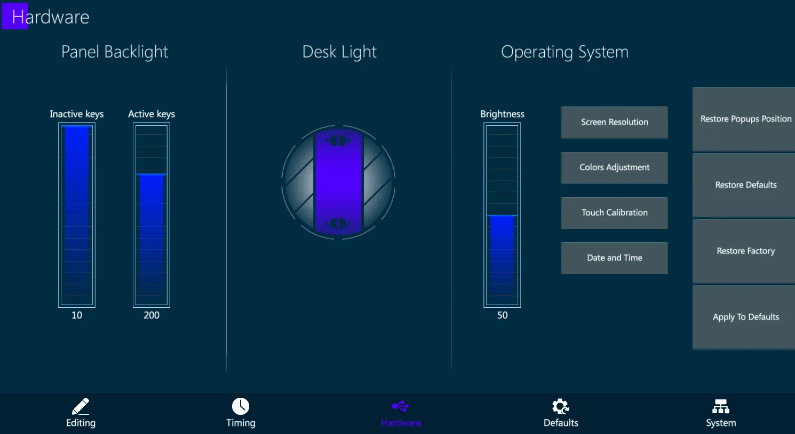
Panel Backlight:
Inactive keys: Adjusts the LED backlight level of keys that are not valid in the current operational state and the LED backlight level of controllers that are unassigned.
Active Keys: Adjusts the LED backlight level of keys that may be used in the current operational state and the LED backlight level of controllers that have objects assigned.
Operating System:
- Opens relevant Windows setting screen to adjust the OS settings.
4.1.4 Defaults
- Defaults are the customizable initial settings for most system objects.
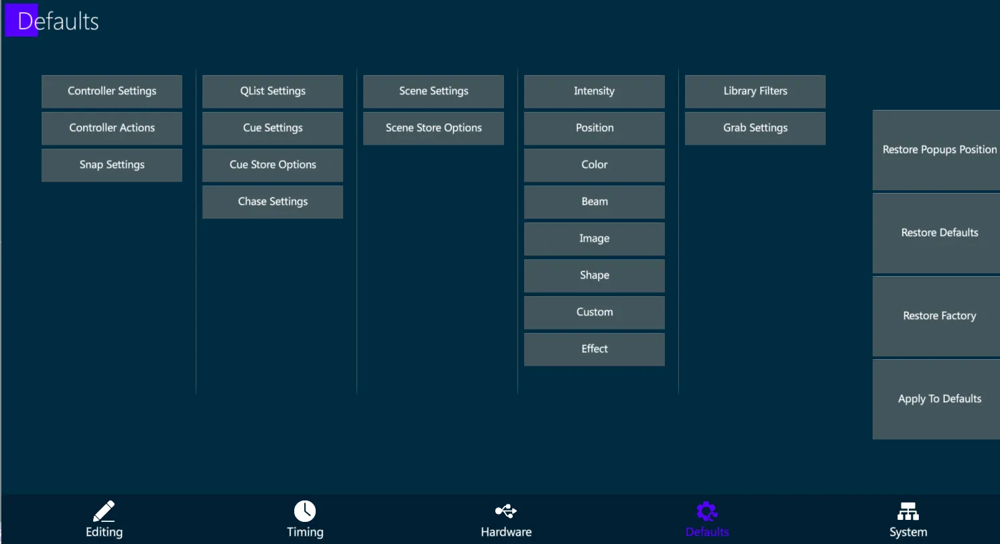
4.1.4.1 Controller Settings
Default Controller Settings
The popup contains all the settings referred to the controller, independently from the object loaded.
Controller Settings are divided into:
Flash Behavior
Slider Behavior
Properties
Priority
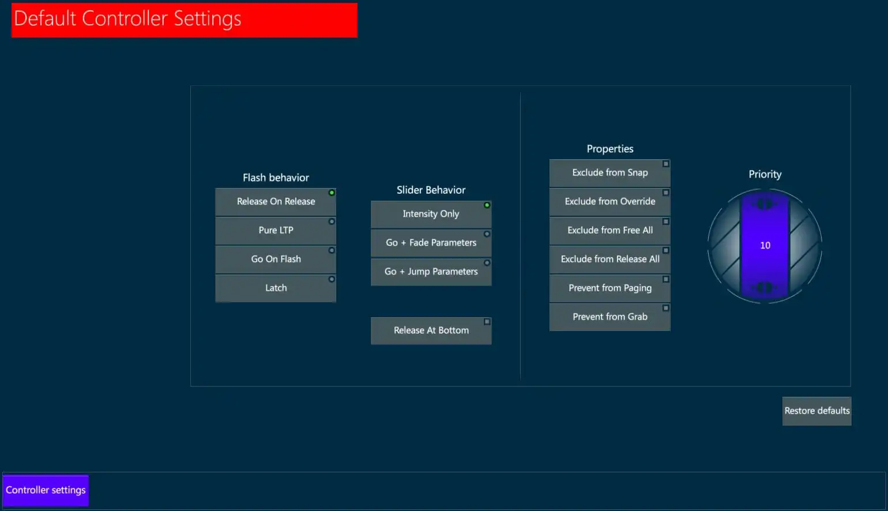
Flash behavior:
Release On Release - While a Flash button is depressed, the controller will assert its values, when released the controller will be released from affecting the stage.
Pure LTP - Pressing a Flash key reasserts overridden LTP values from another controller but does not release them when the flash key is released.
Go On Flash - If a slider is down it will flash the intensity to full and advance the Qlist in cue time with every press of the Flash key.
Latch - Flash key toggles ON/OFF.
Slider behavior:
Intensity Only - Slider only controls the intensity.
Go + Fade Parameters - Moving the slider off zero will initiate a GO command. All parameters, except intensity, will fade to their recorded values using cue time. Intensity will remain under the control of the slider.
Go + Jump Parameters - Parameters Jump to their values as soon as the slider moves off zero. Intensity will remain under the control of the slider.
Release At Bottom - The controller will be released from affecting the stage when the slider reaches zero. Default System Release Time or Qlist Release Time will be used.
Properties
Exclude from Snap - The controller will not be recorded in Snapshots.
Exclude from (Snap) Override - Snap commands will be ignored even if the controller was initially recorded in a snap.
Exclude from Free All - The controller will not be unloaded with a global [VIBE] + [FREE] command. It may only be unloaded with [FREE] [HERE].
Exclude from Release All - The controller will not be released with a global [VIBE] + [RELEASE] command. It may only be unloaded with [RELEASE] [HERE].
Prevent from Paging - Locks a Qlist or Scene to the current page. Paging ⤴ or ⤵ will not affect the Qlist or Scene on the controller.
Prevent from Grab - The Grab command will not capture the controller’s active parameters.
Priority
- Virtual Priority Wheel - Sets the controller’s LTP group number. Controllers assigned higher numbers cannot be overridden by lower numbers. Controllers assigned the same number will be LTP among themselves. Values may be entered using the virtual wheel or directly by tapping the middle of the center area of the wheel and typing a value from the keypad.
Restore defaults
- Resets Controller settings to their last stored configuration.
4.1.4.2 Controller Actions
Default Controller Actions
The popup contains all the actions that can be assigned to the controller, depending on the object type (Qlist, Chaser, Scene, Submaster).
Controller Actions are divided into:
Slider Controller: 1 fader + 3 buttons
A/B Crossfader: dual fader + 2 buttons
Other Controllers: 1 fader + 1 button
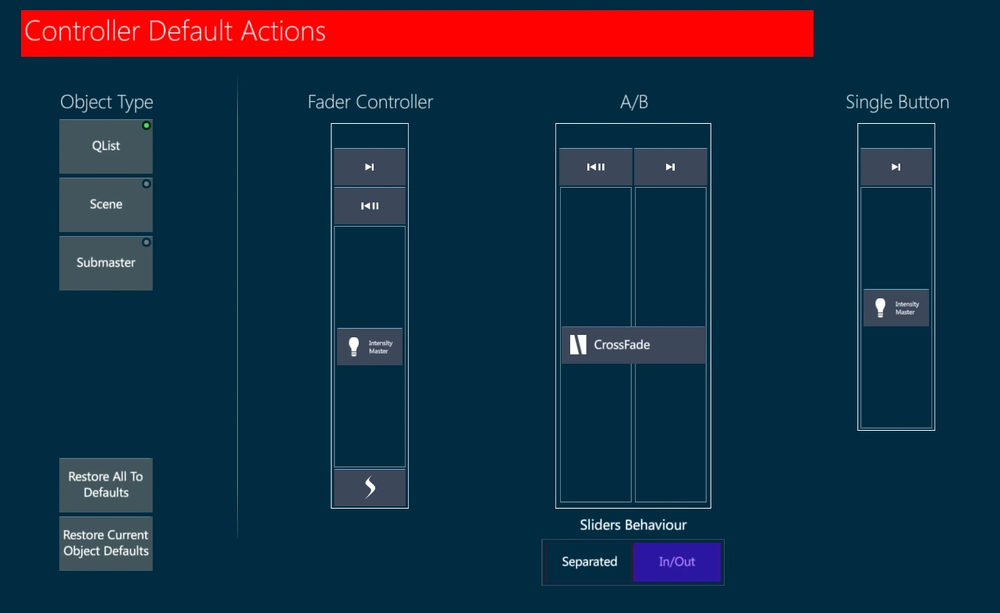
- When a Scene is configured as a Group Submaster it has a unique set of functions and button options.
4.1.4.3 Snap Settings
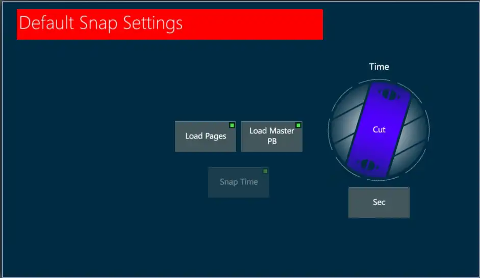
Load Pages:
- Snap will change the current page to the page the Snap was stored in.
Load Master Controller:
- Snap will change the [Select] to the controller that was Master Controller at the time of the Snap.
Snap Time:
- Default fade time for all controllers being initiated by the Snap.
Unit Button:
- Toggles the virtual time wheel units between Milliseconds, Seconds, Minutes, Hours
4.1.4.4 Qlist Settings
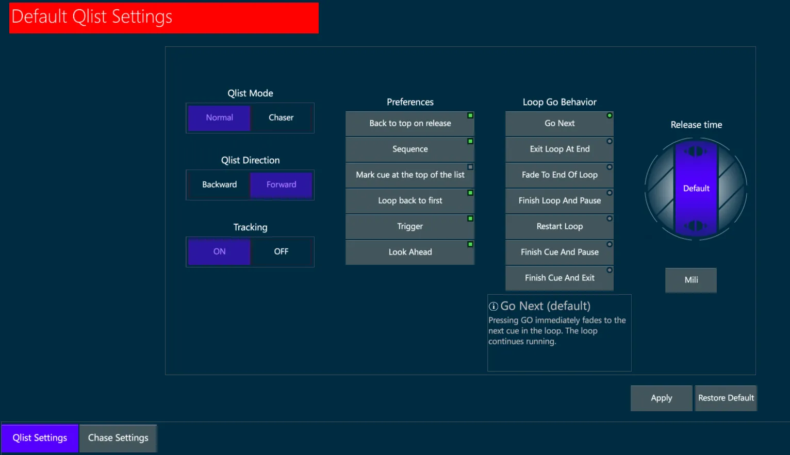
Qlist Mode:
Normal - Cues do not auto loop and all normal time functions are calculated.
Chaser - Cues auto-loop from one to another. Only In-Time, and Delay-In Time are calculated. Parameter time is still valid.
Qlist Direction:
Backward - Chasers and Qlists transition highest to lowest.
Forward - Chases and Qlists transition lowest to highest.
Tracking:
ON - Normal tracking logic will be used.
OFF - Tracking is not calculated and dimmer at zero is treated as a hard zero (Compulite Mode).
Preferences
Back to top on release - After a controller is released, it will reset to the first cue in the Qlist.
Sequence - If toggled on, pressing GO will advance the Qlist.
Mark cue at top of the list. - The Qlist will start with a Mark Cue to preposition the parameters.
Loop back to first - The Qlist will loop from the end to the beginning of the list when GO is pressed.
Trigger - Toggles on/off the execution of Macros and Snaps that are attached to cues.
Look Ahead - Enable/Disable the Look Ahead function.
Loop GO Behavior:
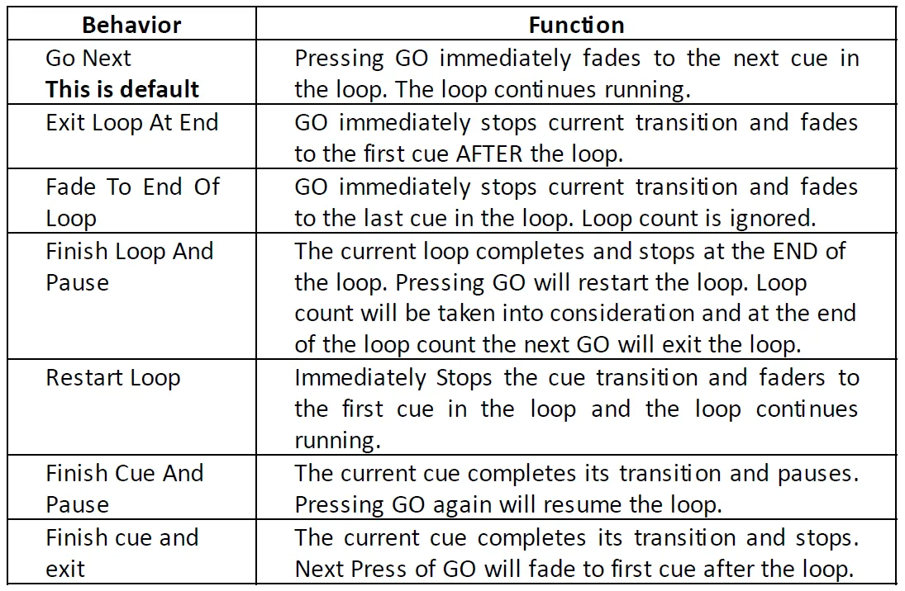
Release time:
Wheel at Default - System Default Release time is referenced.
Rotate the wheel to set a Qlist specific time that a controller references to fade to off.
Tap the inside of the virtual wheel until it turns red and set a release value from the keypad.
Unit Button Toggles the virtual time wheel units between Milliseconds, Seconds, Minutes, Hours.
Restore default
- Resets Qlist properties to their last stored configuration.
4.1.4.5 Chase Settings
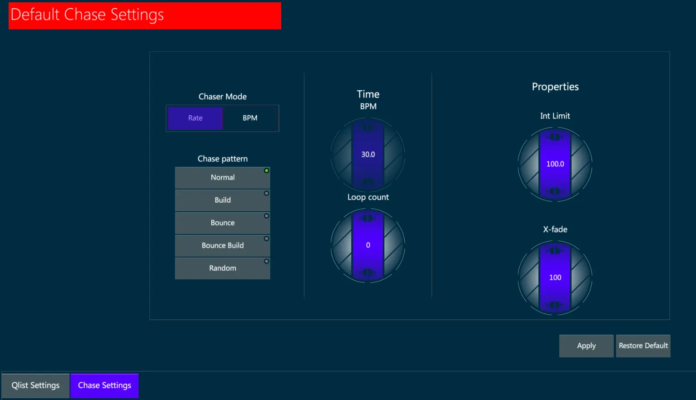
Chase pattern:
Normal - Cues loop from one to another in order.
Build - Cues are added on to each other until the end of the Qlist and then the build is repeated. (Normal tracking behavior).
Bounce - Cues transition from lowest cue number to highest, then reverse and transition from highest to lowest.
Bounce Build - Cues are added on to each other lowest to highest are added to each other highest to lowest.
Random - Cue Order is randomized.
Time:
Chase Time Independent in-time for dimmer when a chase is started.
Unit Button Sets the units for time settings.
Loop count Repeats the chase loop the specified count and stops on the last cue.
Properties:
Int Limit Proportionately limits the intensity output of the cues assigned to a controller.
X-fade Proportionately adjusts the crossfade curve of a chase from full crossfade to jump.
Restores default - Resets Chase properties to their last stored configuration.
4.1.4.6 Cue Settings
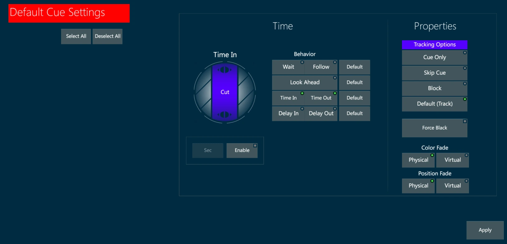
Time:
Behavior selects the target time between Wait, Follow, Look Ahead, Time In/Out, Delay In/Out.
Virtual time Wheel assigns the time value, using the Unit button to set the unit for time settings.
Properties:
- Tracking options for the stored cues. Default is Track.
- Force Black button adds a Force Black Cue before the stored Cue.4.1.4.7 Cue Store Options
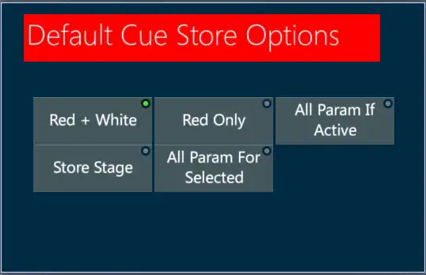
{Red + Grey} Editor Values in 100% 90% will be stored.
{Red Only} Only Editor values in Red will be stored. This can be a useful way to filter parameters.
{All Param If Active} All parameters of all fixtures in the editor will be stored if the dimmer parameter is greater than zero.
{Store Stage} All fixtures outputting ANY DMX value from the console will be stored. This includes tracked values, home values and dimmer values at zero.
{All Param For Selected} All parameters from the fixture selection will be turned red and stored in the cue.
4.1.4.8 Scene Settings
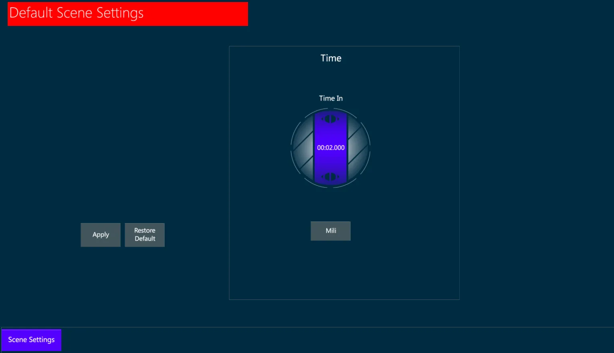
Time In
Sets the default in-time for Scenes. The default value may be changed using:
Virtual time Wheel assigns the time value, using the Unit button to set the unit for time settings.
4.1.4.9 Scene Store Options
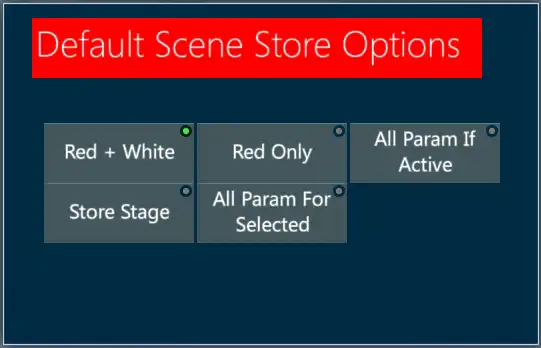
{Red + Grey} Editor Values in 100% 90% will be stored.
{Red Only} Only Editor values in Red will be stored. This can be a useful way to filter parameters.
{All Param If Active} All parameters of all fixtures in the editor will be stored if the dimmer parameter is greater than zero.
{Store Stage} All fixtures outputting ANY DMX value from the console will be stored. This includes tracked values, home values and dimmer values at zero.
{All Param For Selected} All parameters from the fixture selection will be turned red and stored in the cue.
4.1.4.10 Library Settings
Library settings are the same for all the following library types:
Intensity
Position
Color
Beam
Image
Shape
Custom
*Default Library Settings:
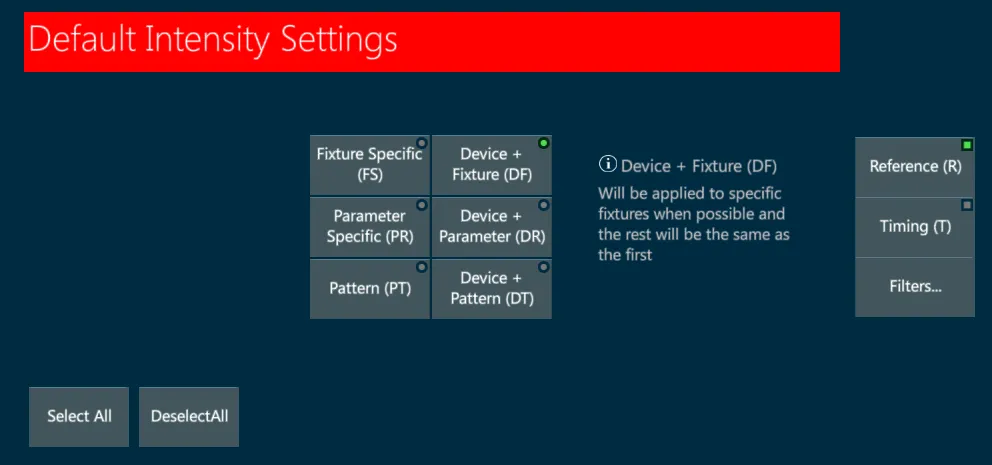
Library Type - Set the library behavior between Fixture Specific, Parameter Specific, Pattern, Device+Fixture, Device+Parameter, Device+Pattern.
Reference - Set the library to be referenced in Cues, Scenes and Effects.
Timing - Set the library to include time values or not.
Filters - Open the Library Filters popup.
Effect Library settings also include two additional options:
Include Base - If toggled on, the start points of parameters will be stored with the Effect making them “Absolute Effects”.
Randomize - If toggled on, every time the library is assigned in the editor the order of selected fixtures will be randomized. When storing a randomized effect into a Scene or a Cue, the order will be kept as it was at the moment of storing.
4.1.4.11 Library Filters
Library Defaults:
- The popup window is used to edit, for each bank, which parameters will be filtered by the library.
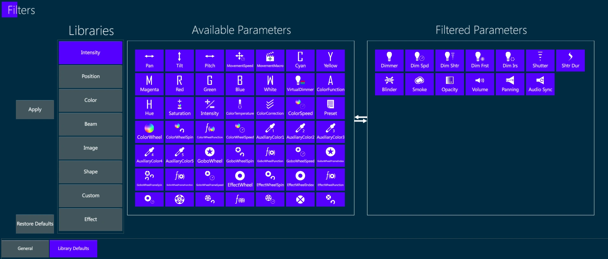
Select the library bank from the Library column, then tap the parameters in the Available box to add them to the Filtered box, so that the library will store them.
Select the library bank from the Library column, then tap the parameters in the Filtered box to add them to the Available box, so that the library will NOT store them.
Restore Defaults button will recover the default parameters assignment.
General:
- The popup window is used to create and edit the Filters that can be used on-the-fly when storing libraries, cues and scenes.
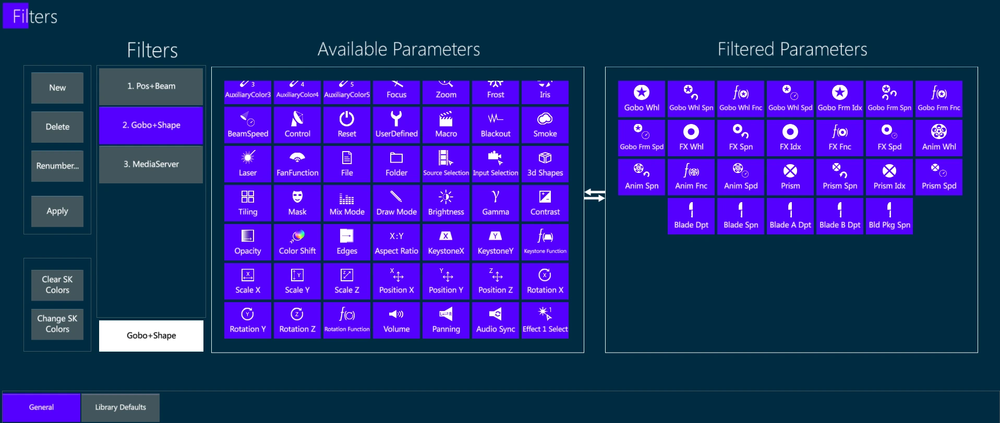
The keys on the left side are used to create, delete or renumber Filters and to assign them a name and a specific softkey color.
The Available and Filtered parameters boxes are used to defin the parameters that the filter is going to be applied to.
4.1.4.12 Grab Settings
The GRAB button directly selects fixtures and parameters, based on the default Grab settings.
The default Grab behavior may be set in System Settings.
Default Grab Settings define what is the common behavior of the GRAB key.
Grab settings may be changed temporarily during programming, or stored as new defaults, on the Grab Settings popup, opened by pressing SETTINGS after a GRAB command.
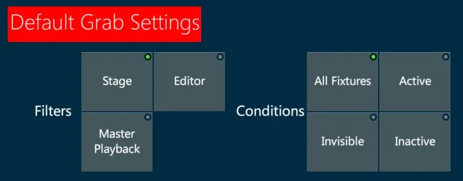
Grab Filters allow selecting fixtures from: the whole Stage, the Editor, the Master Playback.
Grab Conditions allow selecting either All Fixtures, Active fixtures (dimmer over 0%), Invisible fixtures (dimmer at 0%), Inactive fixtures (parameters not in use).
4.1.5 System
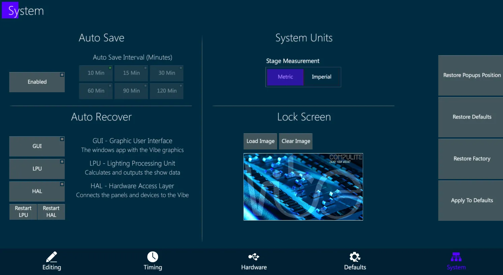
Auto Save:
The show file can be automatically saved at predefined time intervals.
Auto save function can be enabled or disabled in the system settings tab, with the option to assign saving time intervals.
System Units:
- Vibe can be set to use either metric or imperial units for stage measurement.
Auto Recover:
Vibe is made up of four modules:
GUI - Graphic User Interface - The windows software with the Vibe graphics.
LPU - Lighting Processing Unit - The engine that processes and outputs the show data.
HAL - Hardware Access Layer - The system that connects the panels and devices to the Vibe.
SQL - The Data management DataBase.
LPU and HAL Status LEDs are on the status box:
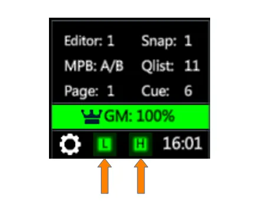
In the case of an unexpected halt, the toggled on modules will attempt a restart.
In the case of an unexpected halt with modules untoggled, the user can attempt a restart manually by tapping the Recover keys.
There is no option to Auto Recover the database as it is always up to date.
Lock Screen Image
The Lock Screen Image can be customized by loading a different image.
Lock screen is shown when system is locked or when Vibe is waiting for the Fixture Builder to be exit.
4.2 Network Settings
Network Settings popup is accessed by selecting {Network Settings} from the Vibe Menu or by tapping the [Network Settings] single button key.
Network Settings popup has the following tabs:
Main Network: manages the network settings of the data output.
User Networks: manages the network settings of the additional ports.
Users: manages the multiuser settings.
For Network management, please refer to the Connect Chapter.


4.3 DMX Settings
DMX Settings popup is accessed by selecting {DMX Settings} from the Vibe Menu or by tapping the [DMX Settings] single button key.

DMX Settings popup has 4 tabs:
Local Output
VCs
ArtNet
sACN
For DMX output management, physical or over network protocols, please refer to the Patch Chapter.
4.4 I/O Settings
I/O Settings popup is accessed by selecting {I/O Settings} from the Vibe Menu or by tapping the [I/O Settings] single button key.
I/O Settings popup has 4 tabs:
- MIDI - to configure the MIDI protocol
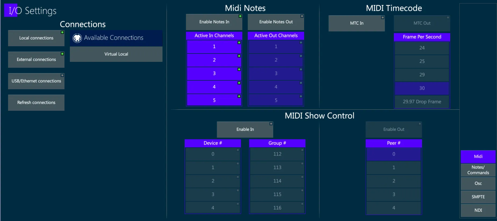
- Notes/Commands - to patch MIDI Notes to vibe commands
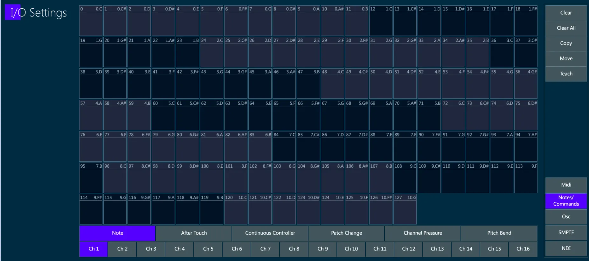
- OSC - to configure OSC ports and commands
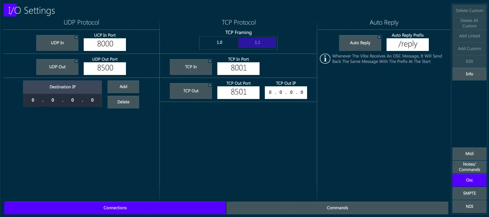
- SMPTE - to enable SMPTE protocol
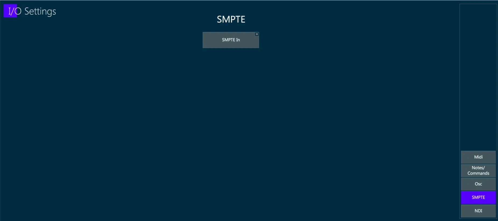
- NDI - to enable NDI protocol
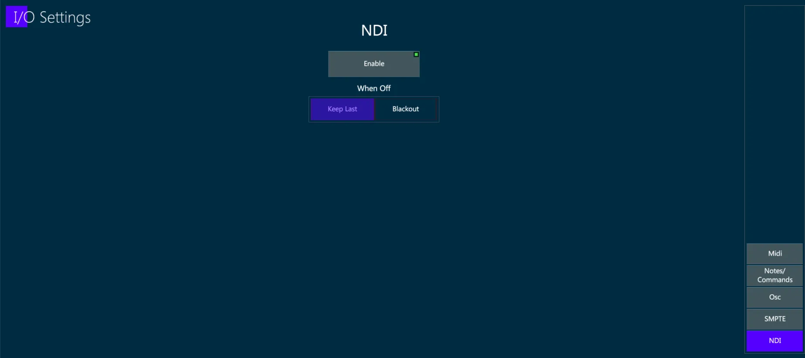
For MIDI management, MIDI Notes configuration, OSC protocol, SMPTE and Timecode signals, NDI streaming protocol, please refer to the Connect Chapter.
4.5 CITP Settings
CITP Settings popup is accessed by selecting {CITP Settings} from the Vibe Menu or by tapping the [CITP Settings] single button key.
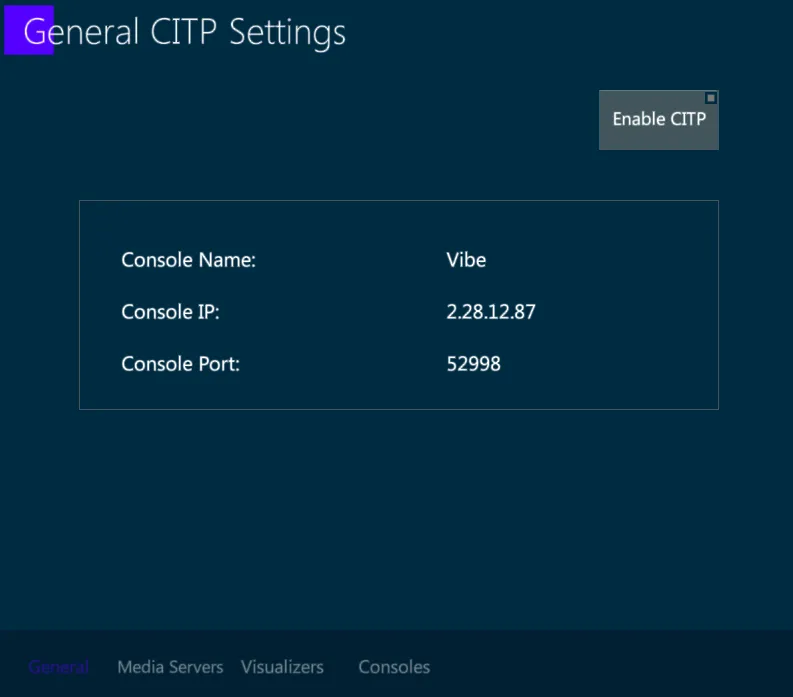
CITP Settings popup has 4 tabs:
General
Media Servers
Visualizers
Consoles
For CITP protocol management, please refer to the Connect Chapter.